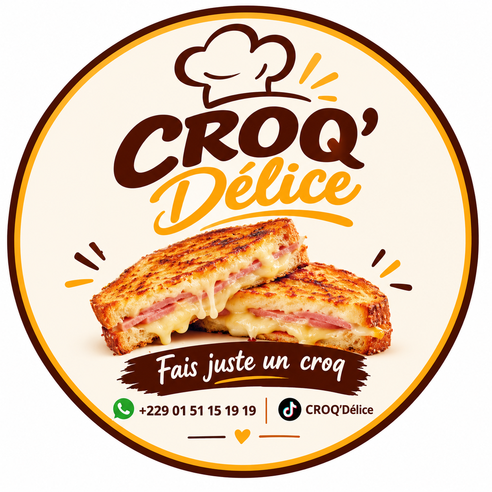

CROQ’Délice · Cococodji
Le goût du fait maison
Une pause gourmande, généreuse et préparée avec soin.

Fais juste un croq’
Des croques qui donnent envie de revenir
CROQ’Délice prépare des croques et des formules à savourer selon tes envies. Parcours le menu, compose ton panier et contacte directement l’équipe pour confirmer ta commande.
Retrouve aussi les vidéos et nouveautés de CROQ’Délice sur TikTok.
Voir TikTok ↗